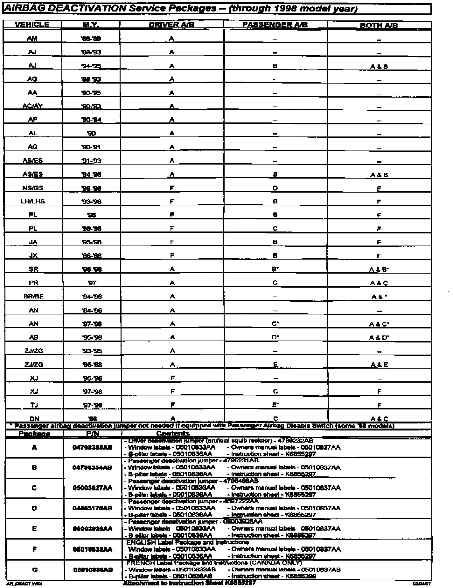

Instruction Sheet K6855297

AIRBAG DEACTIVATION INSTRUCTIONS -- Through 1998 Model Year
DRIVERS SIDE AIRBAG -- ALL EXCEPT '95-'96 XJ
Using a DRB scan tool, follow the service manual procedure for Airbag System Diagnosis and Testing to resolve any active or stored faults prior to initiating deactivation sequence.
1. Disconnect the negative battery cable and isolate.
2. Wait two minutes for the energy reserve capacitor to discharge before proceeding.
3. Locate and disconnect the yellow 2-way squib connector from the driver airbag. See Service Manual if necessary.
4. NS/GS/LH/LHS/PL/JA/JX/XJ/TJ SKIP TO STEP 7, all others continue with step 5.
5. Install the driver airbag deactivation jumper to the control module side of the wire harness.
6. Ensure that the jumper is fully seated by checking the locking tabs of the wire harness.
7. Tie strap or tape back wiring harness to make sure that wiring does not buzz, squeak, rattle, or rub against any surface that may damage the wiring harness or jumper.
8. Connect negative battery cable.
9. Turn ignition key to the run position, ensure airbag warning lamp goes out after approximately eight seconds.
Note:
NS/GS/LH/LHS/PL/JA/JX/XJ/TJ airbag warning lamp will REMAIN ON.
10. Install double sided "DRIVER AIRBAG DEACTIVATED" label on inside surface of driver door window within 2" of lower rear corner.
11. Install the small yellow "DRIVER AIRBAG DEACTIVATED" label on lower half of driver side B-pillar.
12. Install "WARNING: DRIVER AIRBAG DEACTIVATED..." label onto face of owners manual.
Note:
Discard any unused extra labels supplied in package.
13. Reactivate by reversing the above procedure.
14. If vehicle is equipped with a passenger airbag that is to remain activated, verify system integrity by following the service manual procedure for Airbag System Diagnosis and Testing using a DRB scan tool.